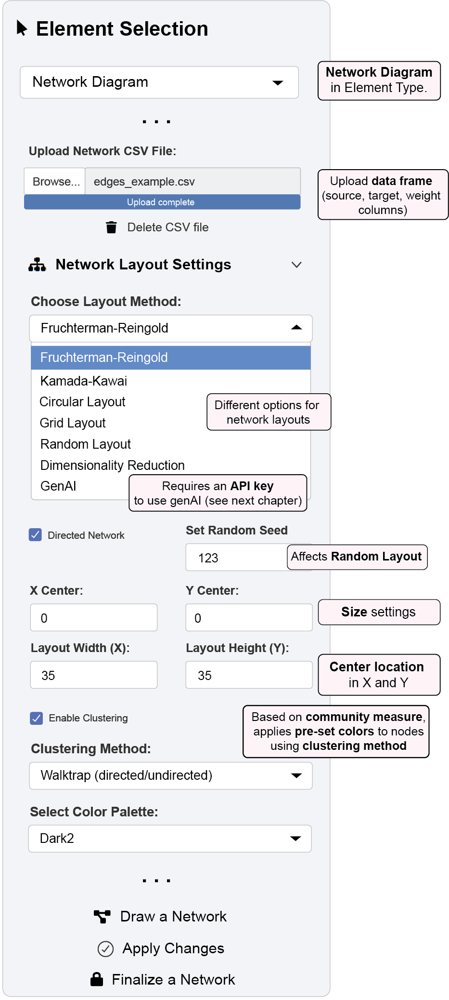
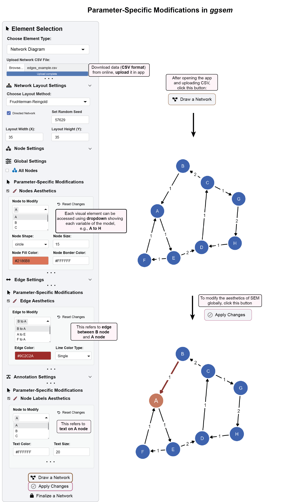

8 Network Diagram Functions Overview
The Network Diagram menuin ggsem provides a comprehensive environment for creating, customizing, and visualizing network data with interactive parameter control that bridges network analysis and visual design.
8.1 Data Specification & Input
ggsem accepts CSV files in edge list format for network visualization, providing flexible options for both weighted and unweighted networks.
Edge List Format:
With edge weights:
source,target,weight
A,B,1.0
A,C,2.0
B,C,3.0
C,D,1.5Without edge weights:
source,target
A,B
A,C
B,C
C,DColumn specifications:
source: Node where edges originatetarget: Node where edges arriveweight(optional): Strength of connection between nodes
Example Data Preparation:
# Download and examine example network data
(edges_data <- read.csv('https://www.smin95.com/edges_example.csv')) source target weight
1 A E 1
2 B A 1
3 C B 2
4 C G 1
5 D C 1
6 E D 2
7 E F 1
8 F A 1
9 G H 2
10 H D 18.2 Layout Algorithms and Network Configuration
ggsem supports multiple layout algorithms for optimal network visualization:
Traditional Layouts (directly affected by Random Seed):
Fruchterman-Reingold: Force-directed layout emphasizing edge length uniformity
Kamada-Kawai: Force-directed layout based on graph distances
Circular: Nodes arranged in circle pattern
Grid: Regular grid arrangement
Random: Stochastic node placement (see below)
Advanced Layouts:
Dimensionality Reduction: Machine learning approaches including t-SNE, UMAP, and PCA
GenAI: AI-powered layout optimization (requires API configuration; see next chapter)
Network Configuration Options:
Directed/Undirected: Toggle directed edge visualization
Random Seed: Ensure reproducible layouts
Clustering: Enable community detection with multiple algorithms (Louvain, Leiden, Walktrap, Fast Greedy)
Cluster Coloring: 10 color palettes for community visualization
8.3 The Interactive Workflow Cycle
ggsem operates on a three-stage workflow for network visualization, maintaining clear separation between data import, customization, and finalization.
Stage 1: “Draw a Network” - Initial Generation
Click the “Draw a Network” button to generate the initial diagram from your edge list data with several features:
Automatic Layout: Applies your chosen layout algorithm to create an optimized network structure
Element Integration: Creates nodes, edges, and automatic labels based on your data
Editable State: All generated elements are marked with
network = TRUEin output tables, ready for modification
Stage 2: “Apply Changes” - Visual Editing Over Network Elements
This stage focuses on applying visual customizations across your network. When you press “Apply Changes”, ggsem performs comprehensive updates while maintaining data integrity.
A. Global Node Settings
Apply consistent styling across all nodes:
Shape Customization: Circle, square, rectangle, oval, triangle, and diamond shapes
Size & Color Control: Independent adjustments to node sizes, colors, border properties
Label Formatting: Text properties for all node labels
B. Global Edge Settings
Standardize the appearance of all connections:
Line Properties: Color, width, transparency, and style controls
Weight Scaling: Scale edge width by weight values with customizable min/max ranges
Curvature Control: Automatic or manual edge curvature for better visibility
Arrow/Edge Customization: Direction indicators for directed networks
C. Global Annotation Settings
Maintain consistent text formatting:
Node Labels: Font family, size, color, and positioning
Edge Labels: Automatic weight display with formatting options
Text Properties: Comprehensive text customization controls
Stage 3: “Finalize a Network” - Network Options Lock
Edit Protection: Changes
networkcolumn toFALSEin output tables, making elements immune to further “Apply Changes” operationsVisual Preservation: Locks current layout and styling while allowing export
Export Preparation: Optimizes the diagram for publication output
8.4 Example 1: Creating and Styling a Basic Network Diagram

This example walks through generating a basic network diagram and applying global aesthetic changes.
Step 1: Data Preparation and Upload
Download example edge list data:
https://www.smin95.com/edges_example.csvIn ggsem, select “Network Diagram” from Element Type dropdown
Upload your CSV file using the “Upload Network CSV File” button
Step 2: Configure Layout Settings
Navigate to “Network Layout Settings” panel
Set random seed to
123for reproducible layoutChoose Fruchterman-Reingold layout algorithm
Adjust layout dimensions as needed (Layout Width (X) =
35, Layout Height (Y) =35)
Step 3: Generate Initial Diagram
Click the “Draw a Network” button
The app will process your data and display the initial network diagram
Step 4: Apply Global Node Styles
Navigate to “Node Settings” panel and open “Nodes Aesthetics” under “Global Settings”
Make the following changes:
- Node Color: Set to
`#AB5250`(red) - Node Size: Set to 15
Step 5: Apply Global Edge Styles
Navigate to “Edge Settings” panel
Configure edge properties by opening “Edge Aesthetics” under “Global Settings”
- Edge Color: Set to
#79706E(gray) - Edge Width: Set to 1.5
- Enable “Scale Edge Width by Weight” with min =
1.0, max =2.5
Step 6: Execute Changes
Click the “Apply Changes” button
The diagram updates with new color scheme and weight-scaled edges
8.5 Interactive Parameter Control: Granular Customization
For precise, element-level control, ggsem offers Interactive Parameter Control that transforms your network into a dynamic visualization environment.
Dynamic Element Selection: Dropdown menus automatically populate with all nodes, edges, and labels from your network data.
Granular Element Manipulation:
8.5.1 Granular Element Manipulation:
Nodes:
Nodes Aesthetics: Select specific nodes to modify color, size, shape, and border properties
Nodes XY Positions: Fine-tune individual node positions (and associated text labels) with XY coordinate controls
Edges:
Edges Aesthetics: Modify specific paths for color, width, style, etc of selected edges
Edges Curvature: Change the curvature of selected edges
Edges XY Positions: Precise control over edge start and end points of selected edges
Annotations:
Node Labels: Modify the text style on selected nodes
Node Labels XY Positions: Modify the location of text labels on selected nodes
Node Labels Text: Change the text themselves on selected nodes
Edge Labels: Modify the text style on edges
Edge Labels XY Positions: Modify the location of text labels on selected nodes
Edge Labels Text: Change the text themselves on selected edges
8.6 Example 2: Parameter-Specific Modifications in Network Diagram

This example demonstrates how to make granular changes to individual elements of an existing network diagram.
Step 1: Load Data and Generate Diagram
Download dataset:
https://www.smin95.com/edges_example.csvNavigate to “Network Layout Settings” panel
Set random seed to
`57629`for reproducible layoutChoose Fruchterman-Reingold layout algorithm
Adjust layout dimensions as needed (Layout Width (X) =
35, Layout Height (Y) =35)Upload CSV file and click “Draw a Network”
Step 2: Modify Specific Nodes
In “Node Settings”, check “Nodes Aesthetics” under Parameter-Specific Modifications
Select “Node A” from the “Node to Modify” dropdown
Set Node Color to
#D97357(orange) and Node Size to15(default)
Step 3: Modify Specific Edges
In “Edge Settings”, check “Edges Aesthetics”
Select “A to B” from the “Edge to Modify” dropdown
Set Edge Color to
#9C2C2A(dark red) and Line Width to 2.0
Step 4: Modify Specific Labels
In “Annotation Settings”, check “Node Labels Aesthetics”
Select “Node A” label and set Text Color to
#FFFFFF(white) and Text Size to20
Step 5: Apply All Granular Changes
Click “Apply Changes” to update the selected elements
The diagram highlights specific nodes, edges, and labels with custom styling
Step 6: Finalize Diagram
Click “Finalize a Network” to lock the diagram
Verify protection by attempting additional modifications
8.7 Summary: The Network Visualization Workflow
The ggsem application provides a structured, three-stage workflow for creating, customizing, and finalizing network diagrams.
Core Workflow:
Generation (“Draw a Network”): Create initial diagram from edge list data with automatic layout optimization
Customization (“Apply Changes”): Refine your diagram through global styling and parameter-specific controls for individual elements
Finalization (“Finalize a Network”): Lock the diagram to protect against accidental changes while maintaining export capabilities